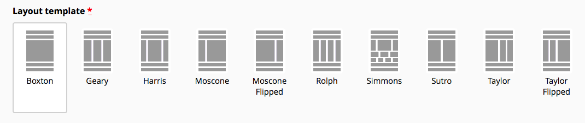
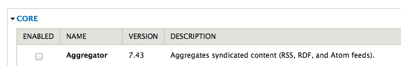

Upgrade from Drupal 7
to Backdrop CMS

Join the conversation: tweet using the hashtag #SrijanWW
Why Backdrop CMS?
- You Love Drupal
- Want a more affordable alternative
- Want (almost) all the same features
Upgrade from Drupal
in 4 easy steps
- Research what will be necessary to upgrade
- Prepare your Drupal site for upgrade
- Upgrade your Drupal site to Backdrop CMS
- Restore your site & go online!
Step 1:
Research what will be necessary to upgrade to Backdrop CMS
i) Review your theme.
Are you able and willing to port your existing theme from Drupal to Backdrop CMS?
Differences in themes
a) The page template (page.tpl.php) and it's variants becomes layouts
Drupal 7
codeBackdrop CMS
configurationDifferences in themes
b) There are minor markup changes. CSS will likely need to be updated.
Drupal 7
div
id="page-title"
Backdrop CMS
article, nav, section, asside
class="page-title"
Differences in themes
c) classes and attributes printed differently in templates.
Drupal 7
class="< ?php print $classes; ?>" < ?php print $attributes; ?>
Backdrop CMS
class="< ?php print implode(' ', $classes); ?>" < ?php print backdrop_attributes($attributes); ?>
Differences in themes
d) functions are called from within templates
Drupal 7
print $styles;
print $scripts;
Backdrop CMS
print backdrop_get_css();
print backdrop_get_js();
ii) Review your layouts.
- Can you make do with the layouts in Backdrop core?
- If not, are you able and willing to create your own? (info file, .tpl.php file, .css file)
iii) Review your modules.
- Custom modules
- Core modules
- Contributed modules
Review custom modules.
- How many do you have?
- How complicated are they?
- Are you able and willing to port your custom modules to Backdrop CMS?
Differences in modules
a) the info file needs to be updated
Drupal 7
core = 7.x
Backdrop CMS
backdrop = 1.x
type = module
Sometimes...
Your module will work after this one change!
(Backdrop CMS contains backwards-compatability with Drupal 7)
However...
There's more, of course.
(You'll likely also want Configuration Management, so...)
Differences in modules
b) configuration management
Drupal 7
variable_set()
variable_get()
Backdrop CMS
config_set() or $config->set()
config_get() or $config->get()
Differences in modules
c) all instances of drupal_ become backdrop_
Drupal 7
drupal_add_css();
Drupal.behaviors.example = {};
Backdrop CMS
backdrop_add_css();
Backdrop.behaviors.example = {};
Differences in modules
d) system_settings_form() has been removed
Drupal 7 settings form
function modulename_settings_form($form, $form_state) {
$form['modulename_my_setting'] = array(
'#type' => 'textfield',
'#title' => t('My setting'),
'#default_value' => variable_get('modulename_my_setting', ''),
);
return system_settings_form($form);
}
function modulename_settings_form($form, $form_state) {
$config = config('modulename.settings');
$form['my_setting'] = array(
'#type' => 'textfield',
'#title' => t('My setting'),
'#default_value' => $config->get('my_setting'),
);
// Add a submit button
$form['actions']['#type'] = 'actions';
$form['actions']['submit'] = array(
'#type' => 'submit',
'#value' => t('Save configuration'),
);
return $form;
}
/**
* Submit handler for module_settings_form().
*/
function modulename_settings_form_submit($form, &$form_state) {
$config = config('modulename.settings');
$config->set('my_setting', $form_state['values']['my_setting']);
$config->save();
backdrop_set_message(t('The configuration options have been saved.'));
}
Differences in modules
e) no more class registry
Drupal 7
files[] = path/to/fileBackdrop CMS
function hook_autoload_info() { return array( 'ClassName' => 'path/to/file.inc', ); }It's not so different!
It should be quick & easy to port modules.
Review core modules.
- Have any been removed from Backdrop CMS?
- If so, did you really need them?
- If so, do they exist in contrib?
- If not, are you able and willing to port it yourself?
Review contributed modules.
- Have any been moved into core in Backdrop CMS?
- If some have not, do they exist in contrib?
- If some do not, are you able and willing to port them?
Step 2:
Prepare your Drupal 7 site!
Before you begin:
- Assure you are on the latest release of Drupal 7.
- Assure you are on the latest stable versions of all your contrib modules and themes.
Back Up Everything:
- Backup the database
- backup files directory
- backup the codebase
Put a copy of each in a safe place!
Prepare your Drupal site
- Disable core modules that have been removed from Backdrop CMS (careful!)
- Change your active themes back to core themes.
- Put your site into maintenance mode.
Dump the prepared database
(from Drupal site)
Import the prepared database
(into Backdrop site)
Step 3
Upgrade!!!
(visit update.php)
Step 4:
Restore your site & go online!
- Enable your theme of choice
- Set up & adjust your layouts as necessary.
- Triple check that everything is working.
- Disable maintenance mode.
Let's do it!
- https://backdropcms.org/upgrade-from-drupal
- tweet using the hashtag #SrijanWW
Questions?
Join the conversation: tweet using the hashtag #SrijanWW